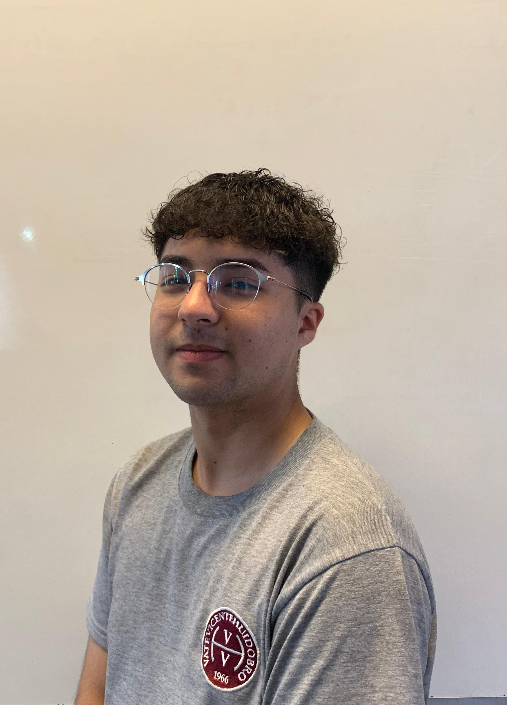

Bienvenido a mi sitio de portafolio
Verás toda información de mis años de estudio, trabajos, habilidades, certificados, etc...



Verás toda información de mis años de estudio, trabajos, habilidades, certificados, etc...


Especialidad de programación - San Ramon, Santiago | 2025
Especialidad de programación - San Ramon, Santiago | 2025